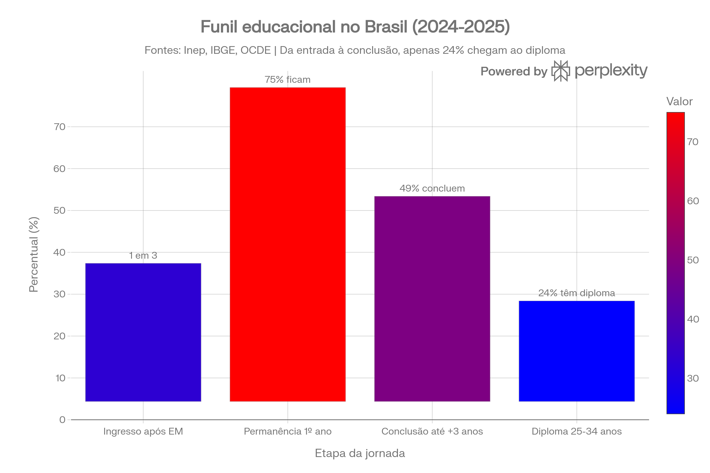

Slide 3: Brasil x Mundo
Brasil: 24% | OCDE média: 49%

Gap de 25 pontos percentuais = grande oportunidade [web:48]
De 33% que entram no superior à 24% que concluem — uma oportunidade de R$ bilhões em retenção de alunos.

Fonte: Inep, IBGE, OCDE | [web:6][web:48]
Gap de 25 pontos percentuais = grande oportunidade [web:48]